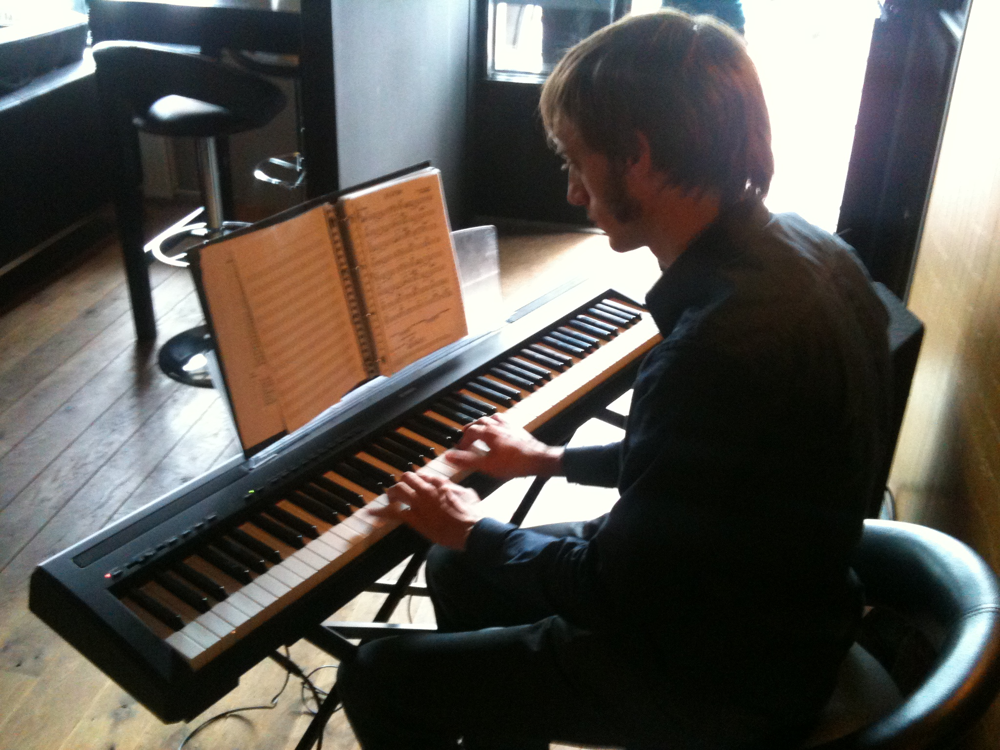
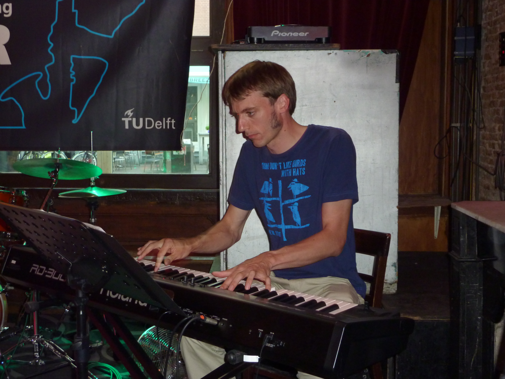

2006/2007 – Ontmoeting met Kris, Antwerpen
Pieter-Jan ontmoet Kris in Antwerpen.
2006/2007 – Café De Klok, Delft
In Delft leert Jan Pieter-Jan kennen, in jazz-café De Klok.
12/06/2007 – Eerste repetitie, Laan van Meerdervoort Den Haag
Eerste repetitie met Kris en Pieter-Jan in Den Haag
10/11/2007 – Groover Ledenweekend, It Beaken, Heeg
Time Will Tell's eerste optreden tijdens het Groover Ledenweekend in Heeg
14/12/2007 – Sint Jansbrug, Delft
Optreden bij studentenvereniging Sint Jansbrug in Delft
08/05/2008 – BBB-CarrièreBeurs, Nijmegen
Optreden in het Huijgensgebouw van de universiteit Nijmegen
11/05/2008 – Optreden Proteus-Eretes, Delft
Optreden met Joop bij roeivereniging Proteus-Eretes
11/09/2009 – Kika Regatta, Hofvijver Den Haag
Optreden tijdens roei-evenement van Stichting KiKa
26/06/2010 – Zandzeebar, Terschelling
Optreden tijdens bruiloft met uitzicht op strand en zee
13/03/2010 – Noordeinder Vermaning Kerk, Noordeinde
Optreden in een kerk in de buurt van Purmerend
22/10/2010 – YES!Delft, TU Delft
Optreden met Maurits tijdens een bedrijvenbeurs in Delft
29/04/2011 – Lijm en Cultuur, Delft
Optreden in een oude fabriekshal
10/04/2011 – Stadscafé De Waag, Delft
Optreden in Stadscafé de Waag
28/05/2011 – Restaurant De Poort, De Lier
Optreden bij restaurant De Poort in De Lier
15/06/2011 – Poppodium Speakers, Delft
Optreden bij Speakers in Delft
25/03/2012 – Stadscafé de Waag, Delft
Optreden in Stadscafé de Waag
14/04/2012 – Dansamar, Vlieland
Bruiloft van Pieter-Jan en Sarah
27/07/2012 – Diverse concerten in Allanche, Frankrijk
Mini-tour Frankrijk met een concert in de Chapelle de Maillargues en optredens in twee cafés in en rond Allanche

14/12/2012 – Optreden bij Stijlloos, Delft
Optreden in de voormalige kapperszaak Stijlloos aan het Vrouwjuttenland in Delft
13/01/2013 – Stadscafé de Waag, Delft
Optreden in Stadscafé De Waag
21/02/2013 – Scheepsbouwkundig Gezelschap William Froude, Delft
Optreden bij de studievereniging van Maritieme Techniek
07/09/2013 – Marriott Hotel, Den Haag
Optreden in het Marriott hotel in Den Haag ter gelegenheid van de Museumnacht
01/11/2013 – 't Manneke, Berkel en Rodenrijs
Optreden ter gelegenheid van het emeritaat van Prof. Klapwijk van de TU Delft
12/05/2014 – Life Science Symposium, Leiden
Optreden bij het 6th Life Science Symposium on Aging

16/05/2014 – Bedrijven Spiegel Symposium, Lijm en Cultuur, Delft
Optreden bij het Bedrijven Spiegel Symposium van de TU Delft
20/09/2014 – Theater de Veste, Delft
Optreden in Theater de Veste in Delft
20/12/2014 – Kerstdiner, Hoorn
Duo optreden met Pieter-Jan bij Oldenburg Bonsel in Hoorn
05/08/2015 – Kasteel Montfoort, Montfoort
Optreden op een bruiloft op Kasteel Montfoort
22/08/2015 – Paviljoen Breezze, Vierpolders
Optreden bij paviljoen Breezze in Vierpolders
07/02/2015 – Brasserie Berlage, Den Haag
Optreden in het achterpaviljoen van het Kunstmuseum in Den Haag

05/05/2015 – Bevrijdingsfestival, Nootdorp
Optreden bij een Bevrijdingsdag evenement in Nootdorp
09/08/2016 – Le Baiser Salé Jazz Club, Parijs
Jamsessie in Baiser Salé in Parijs
29/08/2016 – Ontvangstweek, Delft
Optreden tijdens de Owee van de TU Delft
03/09/2016 – Welkomstreceptie burgemeester, Stadhuis Delft
Optreden bij de welkomstreceptie van de nieuwe burgemeester van Delft
03/09/2016 – Bruiloft, Oude Slot Heemstede, Haarlem
Optreden op een bruiloft in Haarlem
09/01/2017 – Nieuwjaarsreceptie, Stadhuis Delft
Nieuwjaarsreceptie van de burgemeester van Delft
09/01/2017 – Nieuwjaarsontbijt, TU Delft
Nieuwjaarsontbijt van de natuurkundefaculteit
30/06/2017 – Expositie IO, TU Delft
Optreden bij een expositie van Industrieel Ontwerpen op de TU Delft
21/11/2017 – Techniek Bedrijven Evenement, Rotterdam
Optreden bij een bedrijvenbeurs in Rotterdam
08/01/2018 – Nieuwjaarsontbijt, TU Delft
Nieuwjaarsontbijt van de natuurkunde faculteit
28/01/2018 – Parnassos Cultuurcentrum, Utrecht
Optreden in de bar van Cultuurcentrum Parnassos in Utrecht
30/06/2018 – Scheveningse Pier, Scheveningen
Optreden op de Scheveningse Pier
06/09/2018 – Opening Sport en Cultuur, TU Delft
Optreden tijdens de Grand Opening X van Sport en Cultuur
07/01/2019 – Nieuwjaarsontbijt, TU Delft
Nieuwjaarsontbijt van de natuurkunde faculteit
31/08/2019 – Jazz in de Gracht, Den Haag
Duo optreden in een sloep in de grachten van Den Haag
28/06/2019 – Jazz Express, Berlijn
Muzikale reis naar Berlijn
12/09/2020 – Den Haag viert de zomer, Huijgenspark, Den Haag
Optreden in de open lucht vanwege Covid-19
27/11/2021 – Le Duc, Den Haag
Met Jules in Le Duc in Den Haag
04/12/2021 – Le Duc, Den Haag
Met George in Le Duc in Den Haag
05/02/2022 – Le Duc, Den Haag
Met George in Le Duc in Den Haag
26/02/2022 – Le Duc, Den Haag
Met George in Café Le Duc Noordeinde
05/03/2022 – Le Duc, Den Haag
Met George in Café Le Duc Noordeinde
12/03/2022 – Le Duc, Den Haag
Met George in Café Le Duc Noordeinde
23/07/2022 – Le Duc, Den Haag
Duo optreden in Café Le Duc op Noordeinde
30/07/2022 – Le Duc, Den Haag
Duo optreden in Café Le Duc op Noordeinde
10/09/2022 – Boegstraat, Scheveningen
Optreden in de Boegstraat in Scheveningen

16/09/2022 – Bruiloft, Hilversum
Optreden met Tess 'n Jazz in Brasserie de Zonnestraal
02/10/2022 – Gekke Geit, Den Haag
Met George in Café de Gekke Geit in Den Haag
10/12/2022 – Le Duc, Den Haag
Met George in Café Le Duc Noordeinde
10/02/2023 – Le Duc, Den Haag
Met George in Café Le Duc Noordeinde
03/03/2023 – Le Duc, Den Haag
Met George in Café Le Duc Noordeinde
31/03/2023 – Le Duc, Den Haag
Met George in Café Le Duc Noordeinde
21/04/2023 – Le Duc, Den Haag
Met George in Café Le Duc Noordeinde
13/05/2023 – Hotel Fletcher, Wolfheze
Bruiloft van Jan en Emma met George op drums en Sarah op contrabas

02/06/2023 – Le Duc, Den Haag
Met George in Café Le Duc Noordeinde
28/07/2023 – Le Duc, Den Haag
Met George in Café Le Duc Noordeinde
25/08/2023 – Jazz in de Gracht, Den Haag
Optreden Tess 'n Jazz tijdens Jazz in de Gracht
27/08/2023 – Oude Molstraat, Den Haag
Optreden Tess 'n Jazz in de Oude Molstraat in Den Haag
01/09/2023 – Le Duc, Den Haag
Met George in Café Le Duc Noordeinde
10/09/2023 – Podium de Nieuwe Kamer, Fata Morgana, Monster
Optreden Tess 'n Jazz met Taco Gorter
10/11/2023 – Le Duc, Den Haag
Met George in Café Le Duc Noordeinde
15/12/2023 – Le Duc, Den Haag
Met George in Café Le Duc Noordeinde
19/01/2024 – Le Duc, Den Haag
Met George in Café Le Duc Noordeinde
16/02/2024 – Le Duc, Den Haag
Met George in Café Le Duc Noordeinde
22/03/2024 – Le Duc, Den Haag
Met George in Café Le Duc Noordeinde
19/04/2024 – Le Duc, Den Haag
Met George in Café Le Duc Noordeinde
24/05/2024 – Le Duc, Den Haag
Met George in Café Le Duc Noordeinde
26/07/2024 – Le Duc, Den Haag
Met George in Café Le Duc Noordeinde
11/10/2024 – Le Duc, Den Haag
Met George in Café Le Duc Noordeinde
16/10/2024 – Murphy's Law, Den Haag
Albumpresentatie "Black Swan" bij Murphy's Law in Den Haag
08/11/2024 – Le Duc, Den Haag
Met George in Café Le Duc Noordeinde
17/01/2025 – Le Duc, Den Haag
Met George in Café Le Duc Noordeinde
02/02/2025 – Gluren bij de Buren, Zeist
Duo optreden met Kris in Zeist
21/02/2025 – Le Duc, Den Haag
Met George in Café Le Duc Noordeinde
14/04/2025 – Politie Den Haag Exclusief, Rijswijkse Schouwburg
Optreden bij presentatie van Politie Haaglanden in de Rijswijkse Schouwburg
25/04/2025 – Le Duc, Den Haag
Met George in Café Le Duc Noordeinde
16/05/2025 – Le Duc, Den Haag
Met George in Café Le Duc Noordeinde
28/06/2025 – Le Duc, Den Haag
Met George in Café Le Duc Noordeinde